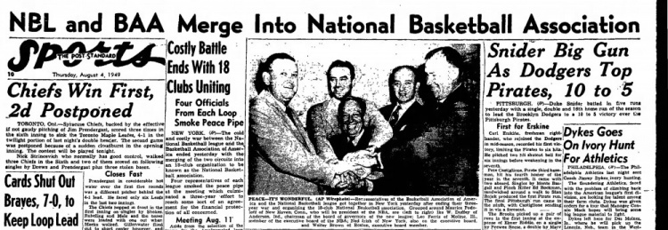
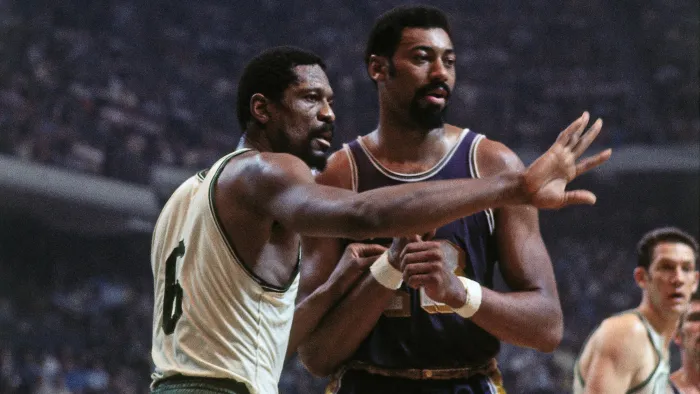

The BAA and NBL Merger
The year is 1946 and word came through that there is a new basketball league starting in the States. The Basketball Association of America had been formed to compete with the nine-year-old National Basketball League. The main point that the BAA wanted to prove was that basketball can be a sport made for big cities, rather than the small Midwestern towns of the NBL. The BAA became the first league to run basketball games at the major venues like Madison Square Garden in New York and the Boston Garden. Having access to these big venues lead to the attraction of the best players the sport had to offer. This lead to four teams from the NBL joining the BAA outright, bringing over the biggest star in basketball at the time, George Mikan. By this point, the NBL had no option but to join the competition if they wanted to stay afloat. On August 3, 1949, both leagues agreed to combine into one super league that would be known as the National Basketball Association.
The Early Days of the NBA
The newly founded league consisted of seventeen teams located in a mixture of small and large cities throughout the U.S. This was great until the NBA realized that basketball at the professional level works better in bigger markets. By the 1954 season, the league had trimmed down to just eight franchises. The eight teams were the New York Knicks, Boston Celtics, Minneapolis Lakers, Phiadelphia Warriors, Fort Worth Pistons, Rochester Royals, Syracuse Nationals, and the Milwaukee Hawks. These may sound familiar because every single one of these franchises are still in the league today, although six of them would relocate. This would be considered the lowest point in the history of the NBA, but little did they know better days were definitely ahead.
A Rivalry is Born
In the span of just three years, two of the greatest to ever do it would enter the league as rookies. In 1957, center Bill Russell would join an already loaded Boston Celtics team. Russell had led the University of San Fransisco to back-to-back national championships while averaging 20.7 points per game and 20.3 rebounds per game. Just a few short years later in 1959, a center named Wilt Chamberlain had joined the Phiadelphia Warriors. Wilt was considered one of the greatest athletes on earth and averaged 29.9 points per game and 18.3 rebounds per game at Kansas University. With Bill Russell and his amazing team around him playing against the greatness that was Wilt Chamberlain, the NBA had officially set up what would be one of the greatest rivalries in the history of sports.
The Celtics Dynasty
When talking about the 1960's NBA, only one word comes to mind, Celtics. Boston put together and held the most impressive lineup in basketball throughout this time period, which lead to nothing but team success. From 1959 to 1966, the Boston Celtics won eight straight NBA championships, a record that no team has matched since. The following season they dropped the chip, only to reclaim their title the following two seasons. The Cels absoutely dominated the 1960s winning nine championships in ten seasons, a feat that sounds impossible today. The team consisted of hall of famers such as Bill Russell, Bob Cousy, Tom Heinsohn, and Sam Jones just to name a few. The dominance of this team is unlike anything we have ever seen in sports.